Solving Simultaneous Equations
When we have two equations in two variables and are trying to find a solution which fits both, we often solve one equation for one of the variables and substitute into the second equation.
Note that if we have two unknowns (two variables) which we are trying to find, we must have two equations--that is, two relationships between the unknowns. Similarly, three unknowns requires three equations, and so forth. The group of equations is known as a system of equations, and we solve by finding the simultaneous solutions to all of the equations in the system.
Examples


So the solution that solves both equations simultaneously is \(x=-16,\ y=11.\)
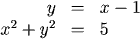
Plugging in the expression \(x-1\) for y in the second equation, we get

Thus \(x=2\) or \(x=-1\). If \(x=2\), then \(y = 2-1 = 1\), and if \(x=-1\), then \(y = 2-(-1) = 3\). Thus the solutions to the system are \(x=2\) and \(y=1\), or \(x=-1\) and \(y=3\).


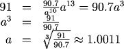
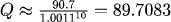
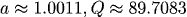

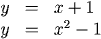


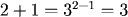

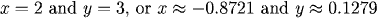
1. Solve for \(x\) and \(y\):
Solving the first equation for \(y\) gives \(y = 3 - (x/2)\), so, substituting for y in the second equation we get
Then
So the solution that solves both equations simultaneously is \(x=-16,\ y=11.\)
2. Solve for \(x\) and \(y\):
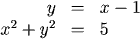
Plugging in the expression \(x-1\) for y in the second equation, we get
Thus \(x=2\) or \(x=-1\). If \(x=2\), then \(y = 2-1 = 1\), and if \(x=-1\), then \(y = 2-(-1) = 3\). Thus the solutions to the system are \(x=2\) and \(y=1\), or \(x=-1\) and \(y=3\).
3. Solve for \(Q\) and \(a\):
Solve the first equation for \(Q\):
Then, plugging this in to the second equation,
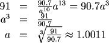
Then
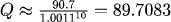
Note that in this case we have found an approximate solution to the system of equations:
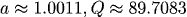
4. Find the points of intersection for the graphs in each of the figures below:
In both cases we solve the equations simultaneously by setting the\(y\)-values equal to one another. For the left graph, we are solving the system of equations
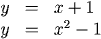
So
and thus \(x=2\) or \(x=-1\). To get the corresponding y values we can use either equation.
For \(x=2\), we get \(y=3\), and for \(x=-1\), \(y=0\). Therefore the points of intersection are (2,3) and (-1,0). For the second graph, we are solving
And so want
However, we cannot use algebraic techniques to solve this because the variable \(x\) appears both in the exponential and on the left-hand side. We can guess one solution, however, by noting that
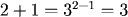
so that \(x=2\), \(y=3\) is a solution to the system. There is a second solution, as shown in the graph, which we can estimate by tracing the graphs on a calculator. This is
Therefore the solutions are
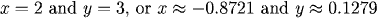
Practice
Question 1:
Question 2:
Question 2:
Return to Main